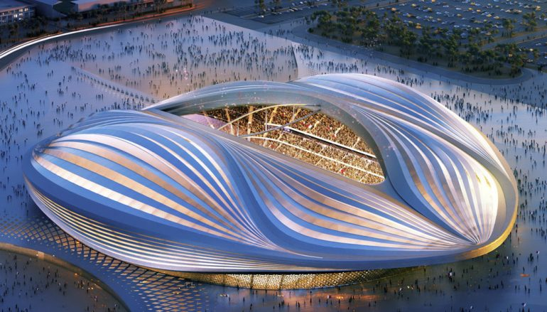

Estádio Al Janoub, antigamente conhecido como Al Wakrah, é um situado em Al-Wakrah, no Catar. Inaugurado em 16 de maio de 2019, tornou-se o segundo estádio proposto para Copa do Mundo de 2022 a ser concluído. Apresenta um design pós-modernista e neo-futurista curvilíneo. A aparência do telhado foi inspirada nas velas dos tradicionais barcos Dhow, usados por mergulhadores de pérolas da região, tecendo através das correntes do Golfo Pérsico.
Inspirado na tradicional colheita de pérolas – a primeira grande atividade comercial do Qatar antes da descoberta do petróleo – o Al Janoub Stadium é certamente um dos mais belos estádios de futebol do mundo. Localizado na cidade portuária de Al Wakrah, o projeto do estádio revela formas orgânicas e peroladas, um projeto da premiadíssima arquiteta Zaha Hadid que mergulhou na cultura catari para projetar essa pérola da Copa do Mundo do Qatar. O estádio foi inaugurado em 2019 durante a final da Copa do Emir, com vitória do Al Duhail, de Doha.
O estádio será uma das sedes da competição, e será disputada uma partida das oitavas de final nele. Após a Copa do Mundo, a capacidade deve ser reduzida para vinte mil espectadores
